|
Teorema
Sea 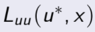 una función que exista, que sea acotada y contínua y suponga que
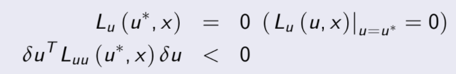 y para un δu arbitrario, entonces u* es un máximo local.
|
Prueba
El teorema debe mostrarse mediante la prueba de que existe un ε > 0 tal
que |u- u*| < ε tal que 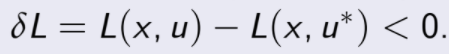
Como se sabe que 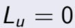, esto implica que
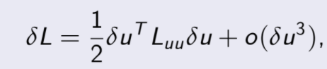
defina 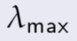 como el valor propio mayor de 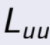 por lo que
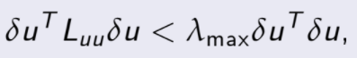 (desigualdad de Rayleigh)
ahora elija un ε > 0 tal que 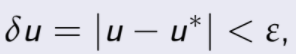 esto implica que
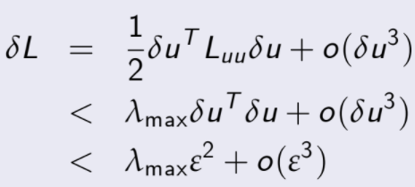
Prueba
Pero como 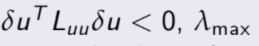 debe ser estrictamente negativo por lo
que se escoge ε > 0 tal que  domine en signo a
domine en signo a  por lo que
por lo que

por lo tanto u* es máximo local y el teorema está probado.
- Las condiciones son similares a las anteriores salvo que en

se tiene una desigualdad estricta, esto da condiciones suficientes,
observe que si la desigualdad no es estricta la función en cuestión no
es fuertemente convexa.